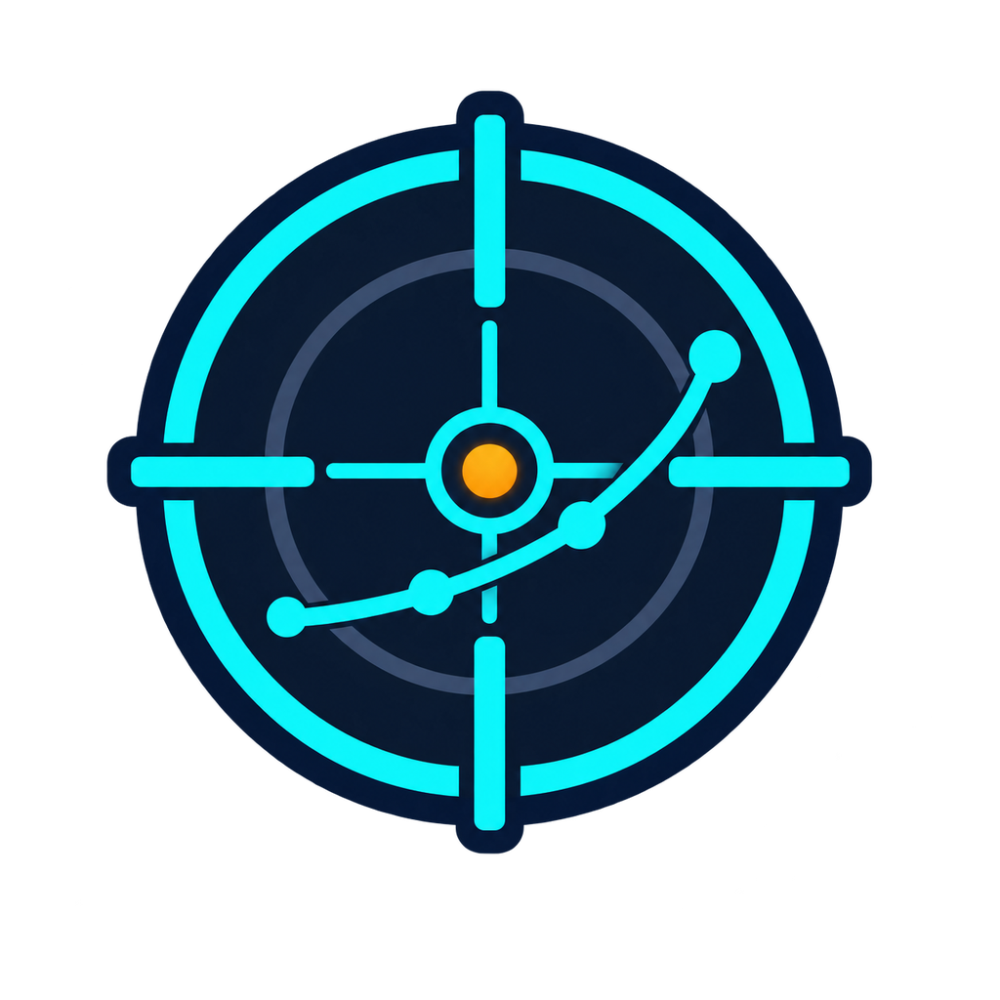
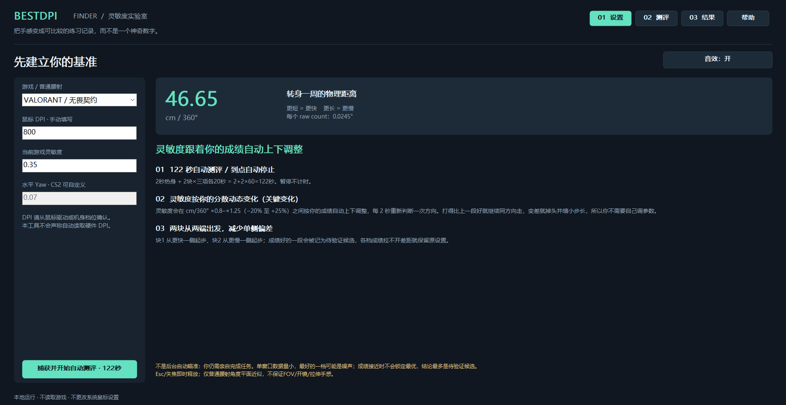

从熟悉的设置开始
填写真实硬件 DPI 和当前灵敏度，查看 cm/360°。支持无畏契约 / VALORANT 与 CS2 的普通腰射换算。

BestDPI Finder下载为 FPS 玩家打造的灵敏度实验室
不用盲目照抄别人的参数。
从你现在的设置出发，用 120 秒定位、微调与跟踪，
找到值得带回游戏复核的灵敏度候选。
Windows 10 / 11 · x64 · 免安装 · 无需 Python

有效测评 · 另加 2 秒热身
定位点击 / 微调 / 跟踪
结算成绩，决定下一步
结果保存为 JSON
少一点猜测，多一点记录
把“感觉还行”变成可以回看的成绩。
有差异时提出候选，证据不足时保留原设置。
填写真实硬件 DPI 和当前灵敏度，查看 cm/360°。支持无畏契约 / VALORANT 与 CS2 的普通腰射换算。
每个计分窗口内保持设置不变。成绩改善就继续探索，变差就掉头、缩小步长；两块从相反方向出发。
保留窗口级记录与推荐理由。低分、平坦曲线或单次峰值不足以下结论时，明确建议保留当前设置。
QUICK START / 三步开始
选择游戏，确认硬件 DPI，填入游戏里的当前灵敏度。
2 秒热身后完成两块定位、微调、跟踪。Esc 或失焦会释放鼠标，暂停不计时。
查看轨迹，导出记录，再手动将候选数值填入真实游戏。需要时隔天复测。
SEE IT IN ACTION
真实界面与正常计时采集的任务片段。
QA 模拟输入，带你了解操作流程。
READY WHEN YOU ARE
Windows 10 / 11 x64 · 解压即可运行
请解压到可写文件夹。EXE 尚未签名；遇到系统提示时核对来源与 SHA-256，勿关闭安全防护。
更多使用说明
将候选数值手动填入真实游戏，再复核瞄准和转身手感。这是一套短时启发式搜索，两块测评用于探索候选；稳定性由后续复测确认。
DPI 需要手动确认并填写。软件只调整自身测试场，不修改硬件 DPI、系统鼠标设置或游戏配置。
普通腰射的线性角度换算不复刻 FOV、开镜、拉伸与后坐力。默认 yaw 来自第三方资料；游戏内复核是最后一步。
每块记录写入程序旁 results/adaptive-latest.json，再次测评会更新它。要保留多次历史，请主动导出 JSON。测评数据不后台上传。
按 Esc 或切换窗口会释放鼠标。恢复必须主动点击；暂停不计时，中断块需要重试。